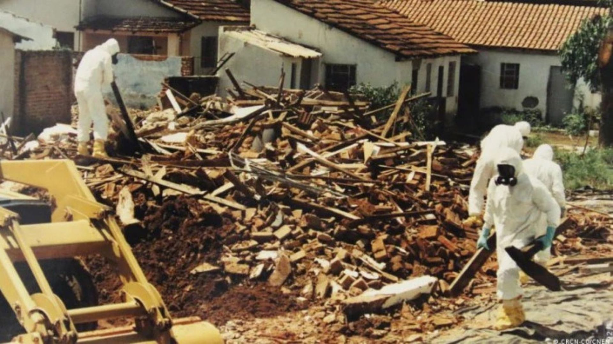
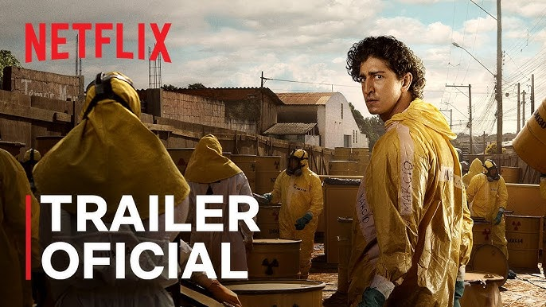

La miniserie "Emergencia radiactiva", estrenada por Netflix en marzo de 2026, reconstruye el accidente radiológico de Goiânia, Brasil, ocurrido en septiembre de 1987, cuando una fuente médica de cesio-137 abandonada fue retirada de un equipo de radioterapia y terminó dispersándose entre la población. El saldo fue devastador: cuatro muertes, 249 personas contaminadas, miles sometidas a controles, viviendas demolidas, espacios públicos afectados y unos 3.500 m³ de residuos radiactivos generados por las tareas de descontaminación.

La serie acierta al no presentar el episodio como una simple "fatalidad nuclear". El accidente real no nació de una explosión ni de un laboratorio fuera de control, sino del abandono de una fuente de radioterapia en una clínica desocupada. Ese abandono, además, no fue neutro: estuvo atravesado por disputas de propiedad, responsabilidades cruzadas y desidia institucional. Distintas reconstrucciones coinciden en que el equipo quedó en un predio cuya situación estaba judicializada y discutida entre los dueños de la clínica y los propietarios del inmueble, mientras las advertencias sobre el peligro no derivaron en una solución eficaz.
Ahí aparece una primera idea fuerte que la serie permite leer con claridad: la pérdida de la fuente de cesio no ocurre al margen del sistema social, sino dentro de una trama de conflicto económico propia del capitalismo. Cuando la propiedad, la renta, la tenencia del terreno, los costos de remoción y las responsabilidades legales pesan más que la seguridad colectiva, el riesgo queda suspendido en tierra de nadie. Nadie lo asume del todo, nadie lo resuelve a tiempo, y el costo final lo paga el pueblo. La catástrofe comienza mucho antes de que alguien abra la cápsula: comienza cuando un material peligroso queda atrapado entre intereses privados, burocracias y omisiones estatales.
Pero la serie va más allá de esa denuncia estructural. Su mayor potencia está en mostrar que el desastre no se expande sólo por la radiación, sino por la desigualdad en el acceso al conocimiento. Una de las escenas más fuertes es la entrada al centro de medicina abandonado: la señalética nuclear está ahí, visible, pero no es comprendida. El símbolo existe, la advertencia existe, y sin embargo no protege. Esa escena condensa una verdad incómoda: no basta con que el saber exista; tiene que existir una sociedad en condiciones de apropiárselo.
ACCIDENTE DE GOIÂNIA (1987)
4 muertes directas
249 personas contaminadas
3.500 m³ de residuos radiactivos generados
Miles sometidas a controles médicos
La ignorancia que allí aparece no es una falla moral individual. Es una producción social. Cuando amplios sectores de la población quedan lejos de la educación científica, de la alfabetización técnica y de una cultura sanitaria básica, los signos dejan de hablar. El cartel de peligro deja de advertir. La distancia entre expertos y pueblo se vuelve una amenaza material. Por eso el costo oculto de la pauperización no es sólo salarial. También consiste en expropiar a las mayorías del conocimiento necesario para protegerse. La propia OIEA resumió esa dimensión al señalar que los habitantes de Goiânia fueron "trágicamente sorprendidos" por los efectos de una vieja fuente radiactiva.
La escena de la cápsula de cesio-137 refuerza esa idea. La fluorescencia azulada no es percibida como una amenaza, sino como algo bello, extraño, casi sobrenatural. Se juega con ella. Se la mira con fascinación. Luego, cuando el polvo radiactivo se dispersa, se lo atribuye a poderes mágicos y se lo regala a familiares y afectos. Ese gesto, que en otro contexto sería una expresión de cercanía, se convierte en vehículo de muerte. La tragedia ahí es brutal: el amor popular, privado de conocimiento, termina transmitiendo daño sin saberlo. La serie evita culpabilizar a las víctimas y ubica la responsabilidad donde corresponde: en una sociedad que naturaliza que los pobres convivan con riesgos que no comprenden.
Ese punto es político en el sentido más profundo. Lo que mata no es sólo la radiación; mata también la organización desigual del saber. Una sociedad puede tener médicos, físicos, hospitales, tecnología y protocolos, y aun así dejar indefensas a sus mayorías si todo eso permanece concentrado en circuitos cerrados. Los pobres reciben muchas veces de la ciencia sus riesgos, pero no siempre sus beneficios; sus consecuencias, pero no necesariamente el derecho a entenderla.
LO QUE LA SERIE DEBATE
✧ El desastre no empieza con el cesio: empieza con el abandono y la especulación
✧ La desigualdad en el acceso al conocimiento multiplica los riesgos
✧ La desconfianza social hacia las autoridades no nace de la nada
✧ Ciencia y política: la tensión entre decisión técnica y cálculo electoral
✧ El valor oculto del conocimiento distribuido territorialmente
La serie también muestra otra dimensión decisiva: la desconfianza social hacia las autoridades. Cuando llegan médicos, técnicos y funcionarios a intervenir, no siempre son percibidos como aliados. A veces son vistos como representantes de otro mundo social, capaces de quitar objetos, clausurar viviendas, imponer órdenes y hablar en un idioma incomprensible. Esa desconfianza no nace de la nada. Se apoya en historias previas de desigualdad y abandono. Incluso cuando quienes intervienen son trabajadores y no elites, aparecen ante la población como parte de una institucionalidad externa, lejana, jerárquica. La emergencia entonces no es sólo sanitaria: es también una crisis de legitimidad.
El personaje de Marcio: el valor oculto del conocimiento distribuido

Emergencia Radiactiva (Netflix).
Por eso uno de los hallazgos más ricos del relato está en el personaje de Marcio, el joven físico nuclear recién egresado que duda entre quedarse en una ciudad periférica o migrar hacia Río de Janeiro, donde se concentran prestigio, carrera y redes de conocimiento. La lógica del mercado parece obvia: el talento debe ir hacia donde rinde más, hacia la metrópoli. Sin embargo, la emergencia demuestra lo contrario. Es precisamente su presencia allí, lejos del centro, lo que se vuelve decisivo para identificar el accidente, interpretar lo que sucede y ayudar a contenerlo.
BENEFICIOS OCULTOS DEL CONOCIMIENTO DISTRIBUIDO
¿Cuánto vale tener un físico, un médico o un docente capacitado viviendo en un pueblo del interior?
¿Cómo se calcula el beneficio de que el conocimiento esté territorialmente distribuido?
Respuesta: El mercado no mide la protección colectiva, solo la rentabilidad privada.
Marcio encarna una idea central: además de costos ocultos, existen beneficios ocultos que el capitalismo no sabe medir. ¿Cuánto vale tener un físico, un médico, un ingeniero o un docente capacitado viviendo en un pueblo del interior y no sólo en las capitales? ¿Cómo se calcula el beneficio de que el conocimiento esté territorialmente distribuido? El mercado no tiene una buena respuesta, porque mide rentabilidad privada, no protección colectiva. Pero la serie sí la sugiere: tener luz en los lugares remotos puede salvar vidas.
Ese es uno de los grandes beneficios sociales de la ciencia pública y del conocimiento compartido. No producen sólo títulos, papers o carreras individuales. Producen también presencia humana capaz de traducir lo incomprensible, ordenar el caos, cuidar a la población y defender el interés común. Si el costo oculto de la desigualdad es un pueblo condenado a no saber, el beneficio oculto de una sociedad que forma y distribuye conocimiento es tener, en el lugar menos pensado, a alguien capaz de comprender, cuidar y salvar.
"Emergencia radiactiva" vale, entonces, por algo más que su reconstrucción de un accidente histórico. Obliga a discutir quién accede al conocimiento, quién decide en una crisis, qué papel juegan los intereses de propiedad, cómo se tensionan ciencia y política, y por qué la participación popular no puede ser reemplazada ni por la ignorancia inducida ni por el mando tecnocrático. Su enseñanza más fuerte quizá sea ésta: el desastre no empieza con el cesio; empieza cuando una sociedad separa la ciencia del pueblo y pone el poder, la propiedad y el cálculo político por encima de la vida.